Documento Visão
Introdução
Este documento tem como objetivo apresentar o produto PUMA, utilizando o método Lean Inception. Esse método foi desenvolvido por Paulo Caroli, e visa construir o MVP (Produto Mínimo Viável), que é o produto com o menor risco, ou seja, menor esforço de desenvolvimento, que direciona a equipe para o desenvolvimento do produto ideal.
É desenvolvido de forma colaborativa, dividindo as etapas em workshops, e resultando em um aprimoramento do relacionamento entre membros de equipe e de um produto mais elaborado devido às diversas colocações durante o processo.
Visão do Produto
A visão do produto ajuda a trilhar o caminho inicial entre a ideia e o lançamento do MVP. Ele ajuda a definir a visão do produto de modo colaborativo e definir a essência do valor de negócio, refletindo uma mensagem clara e convincente para os clientes.
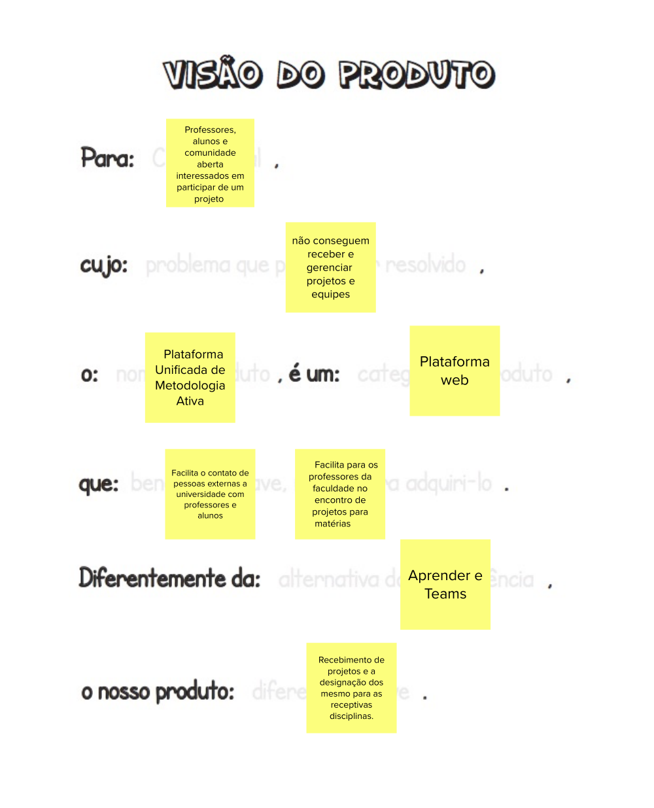
{kind=link}
"É/ Não é" e "Faz/ Não Faz"
Muitas vezes é mais fácil descrever o que alguma coisa não é ou não faz. Esta atividade ajuda a definir o produto de forma que, por vezes é mais fácil descrever algo pelo que tal coisa não é ou deixa de fazer. Tem o objetivo de transmitir aos envolvidos uma visão mais alinhada a respeito do que o produto faz, o que o produto não faz, o que ele é e o que não é.
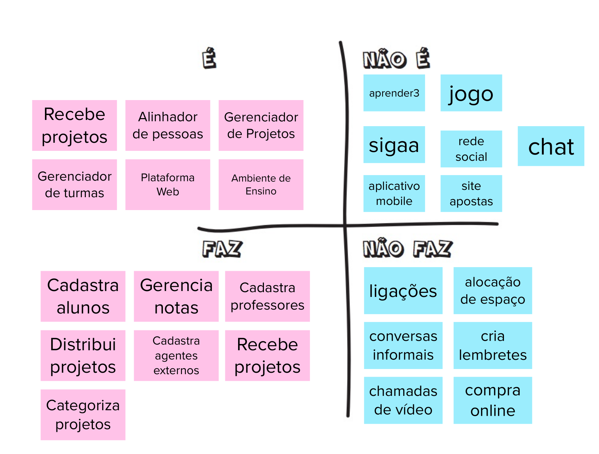
{kind=link}
Objetivos do Produto
Cada participante deve compartilhar o que entende como objetivo para o negócio, e os vários pontos de vista devem ser discutidos para chegar a um consenso sobre o que é realmente importante. Esta atividade serve para auxiliar no levantamento e esclarecimento dos objetivos de acordo c/om os objetivos gerais do negócio.
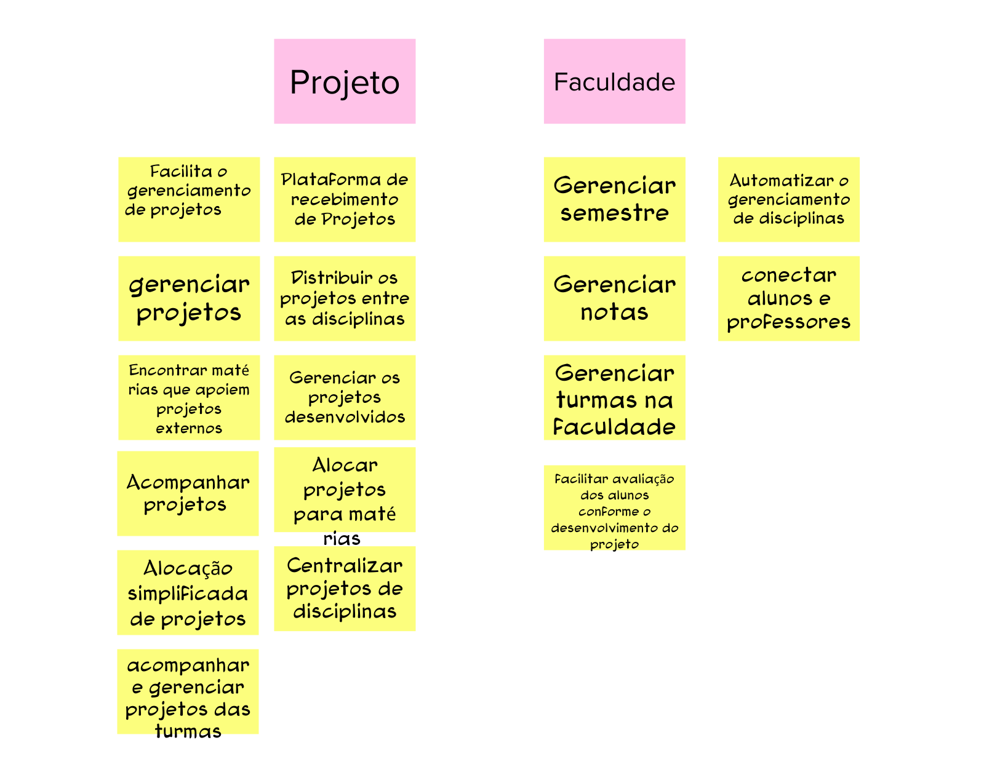
{kind=link}
Personas
A criação de personas serve para representar um usuário do sistema, descrevendo o seu papel e suas necessidades específicas. Assim, é possível identificar as funcionalidades do sistema, trazendo as necessidades da persona e auxiliando o time a descrever funcionalidades do ponto de vista de quem irá interagir com o produto final.
Foram criadas 3 personas para este produto, conforme imagens a seguir:
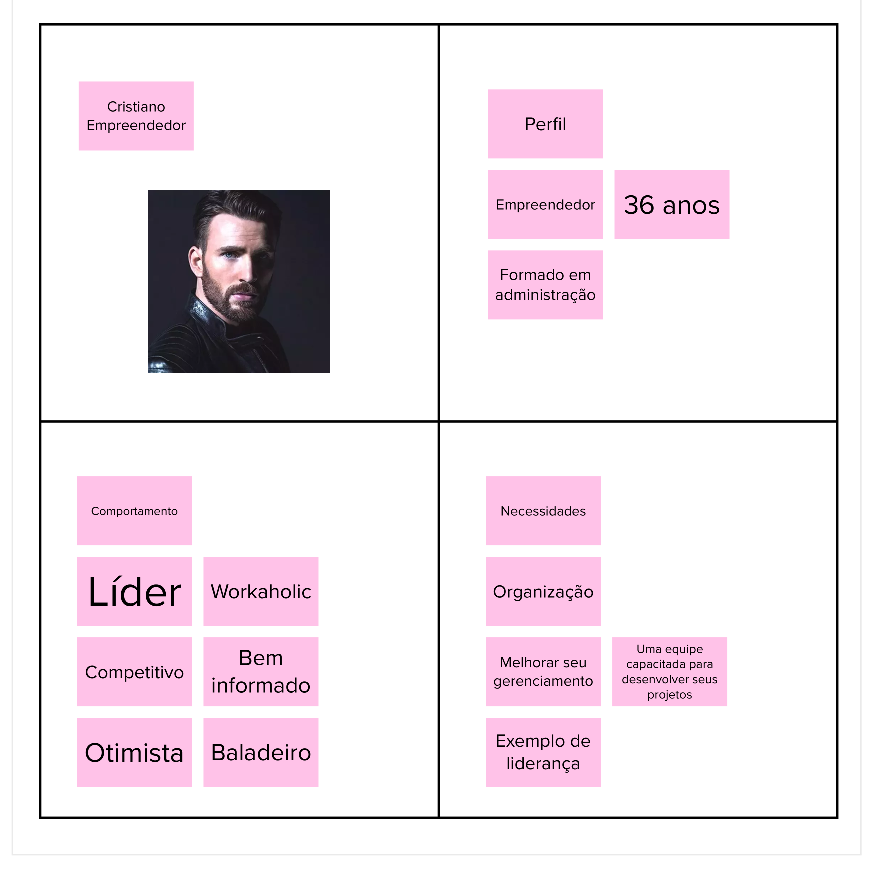
{kind=link}
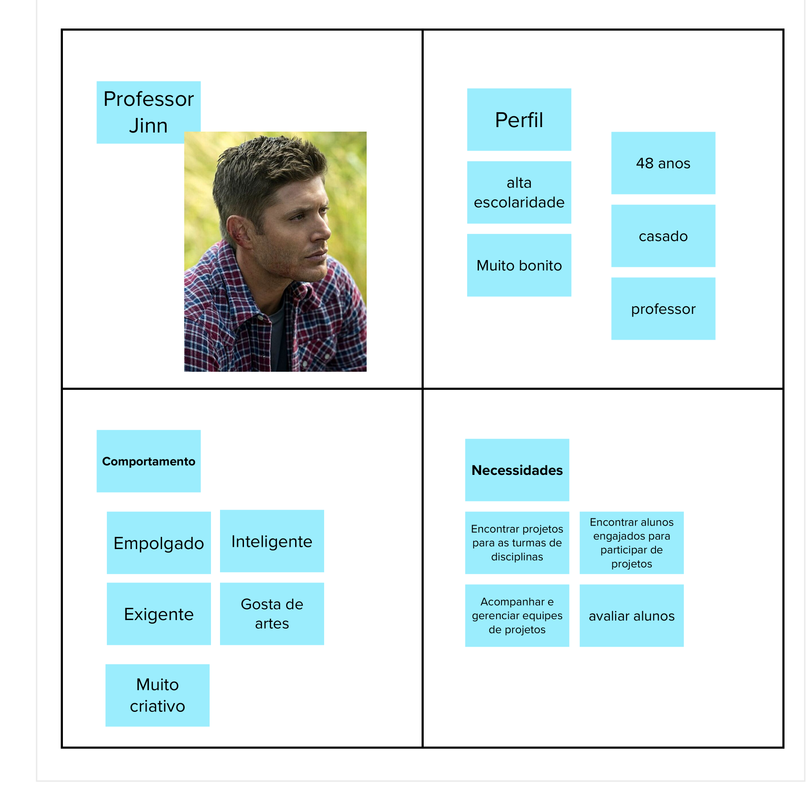
{kind=link}
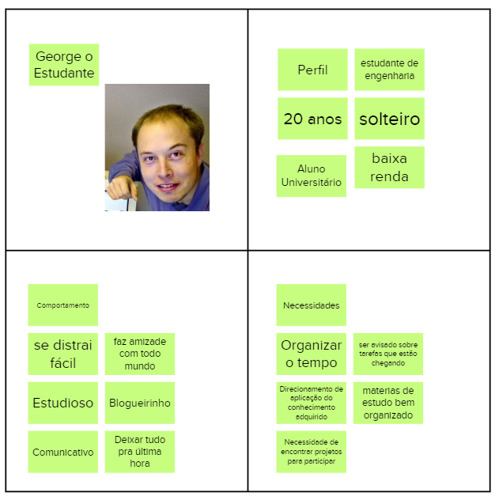
{kind=link}
Jornadas do Usuário
A jornada descreve o percurso de um usuário por uma sequência de passos para alcançar um objetivo. Alguns destes passos representam diferentes pontos de contato com o produto, caracterizando a interação da pessoa com ele.
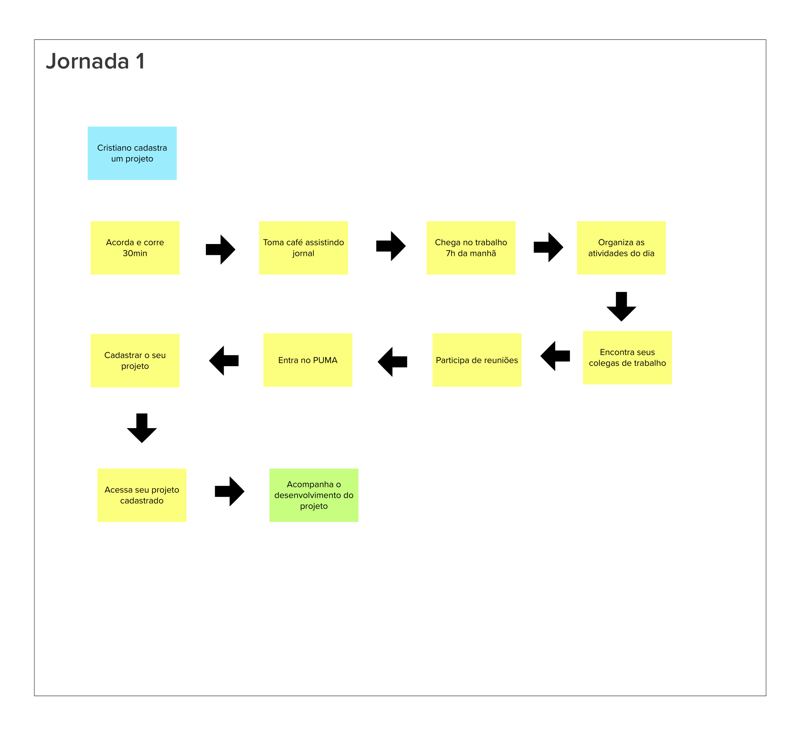
{kind=link}
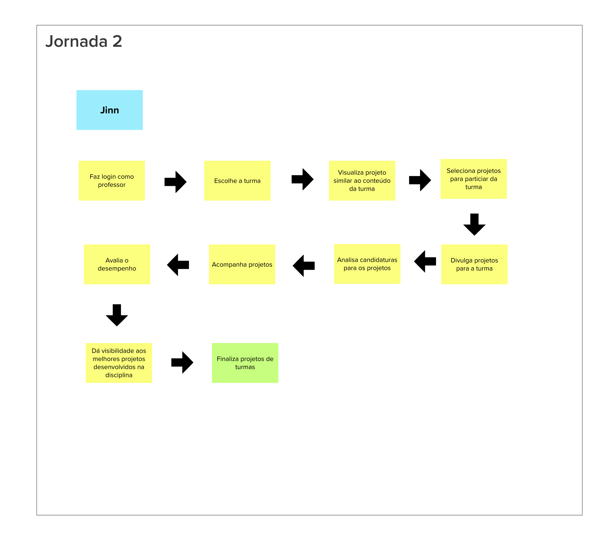
{kind=link}
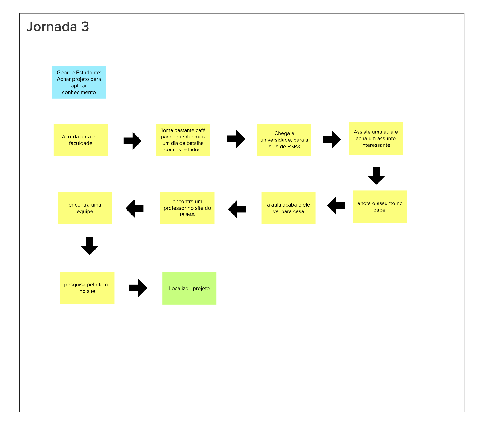
{kind=link}
Brainstorming de funcionalidades
Uma funcionalidade representa uma ação ou interação de um usuário com o produto. O brainstorming de funcionalidades,também chamada de tempestade de ideias, é uma técnica utilizada para propor soluções a um problema específico. Consiste em uma reunião na qual os participantes expõem suas sugestões e debatem sobre as contribuições do coletivo. No âmbito de software o brainstorming serve para que os participantes deem ideias de funcionalidades do produto.
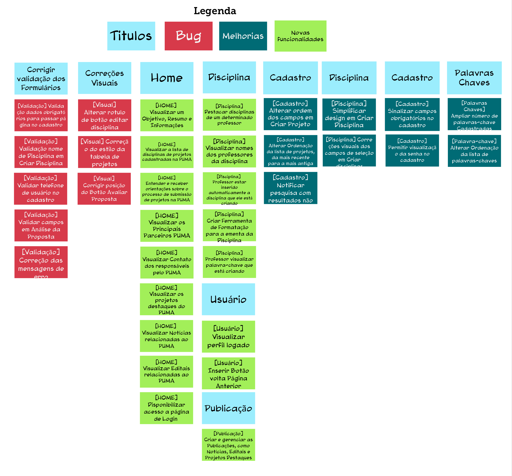
{kind=link}
Revisão Técnica, de Negócio e de UX
Esta revisão tem o objetivo de discutir como a equipe se sente em relação ao entendimento técnico, o de negócio e o de UX (Experiência de Usuário) para cada funcionalidade. A partir desta atividade, novas notas serão capturadas e as discordâncias e dúvidas ficarão mais aparentes.
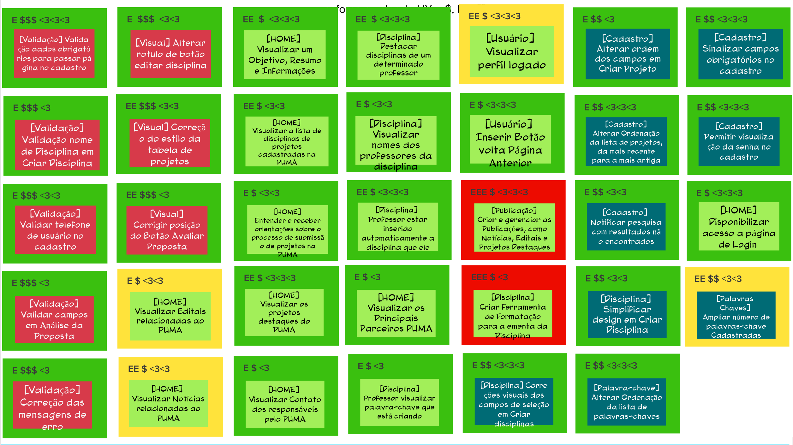
{kind=link}
Sequenciador
O Sequenciador de funcionalidades auxilia na organização e visualização das funcionalidades e da sequência de validação incremental do produto. Para que seja seguida a ordem de priorização temos as seguintes regras:
- Regra 1: Uma onda pode conter no máximo três cartões.
- Regra 2: Uma onda não pode conter mais de uma cartão vermelho.
- Regra 3: Uma onda não pode conter três cartões somente amarelos ou vermelhos.
- Regra 4: A soma de esforço dos cartões não pode ultrapassar cinco 'E's.
- Regra 5: A soma de valor dos cartões não pode ser menos de quatro $s e quatro corações.
- Regra 6: Se um cartão depende de outro, esse outro deve estar em alguma onda anterior.
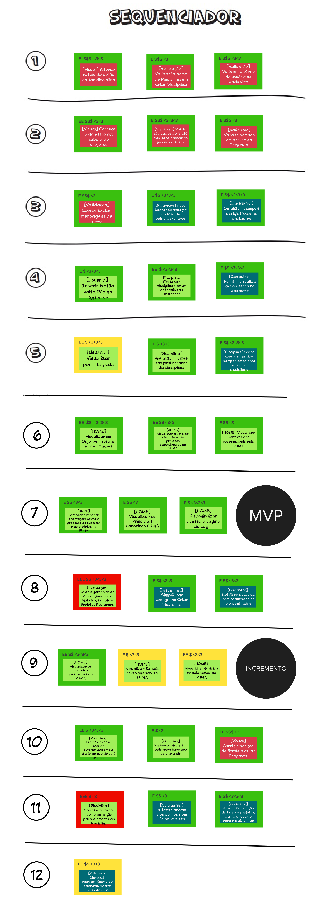
{kind=link}
Canvas MVP
O Canvas MVP é um quadro visual que auxilia a equipe a alinhar e definir a estratégia do MVP, a versão mais simples do produto que pode ser disponibilizada para o negócio (produto mínimo) e que possa ser efetivamente utilizado e validado pelo usuário final (produto viável).
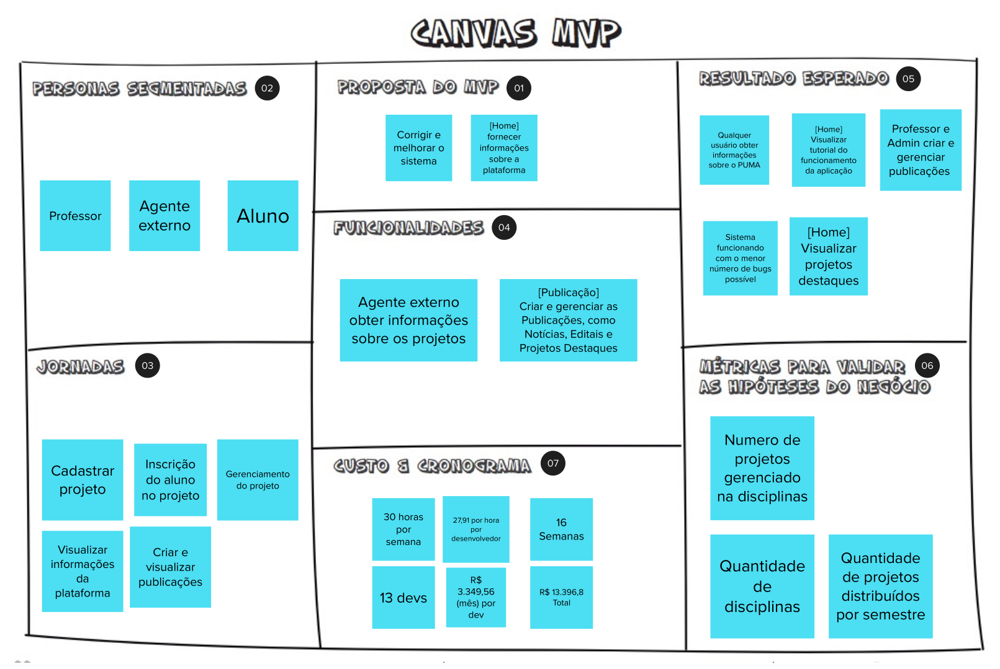
{kind=link}
Lean Inception
Abaixo podemos observar o resuldado do Lean Inseption de modo interativo, onde temos uma visualização completa dos passos executados para concluir o método.
Referências
[1] CAROLI, Paulo. Lean Inception: Como Alinhar Pessoas e Construir o Produto Certo. Caroli. Disponível em https://www.caroli.org/livro/lean-inception/. Acesso em: 13 de Julho de 2022.
| Versão | Data | Descrição | Autores |
|---|---|---|---|
| 0.1 | 13/07/2022 | Abertura do documento | Felipe, Giovanna e Breno Henrique |
| 0.2 | 14/07/2022 | Adição de novos tópicos | Felipe |
| 0.3 | 15/07/2022 | Adição das imagens | Eduardo e Breno Yuri |
| 0.4 | 23/07/2022 | Adição do iframe | Giovanna e Hugo |
| 0.5 | 23/07/2022 | Adição de etapas com imagens lean inception | Giovanna e Hugo |
| 1.0 | 23/07/2022 | Revisão de documento | Hugo |
| 1.1 | 31/07/2022 | Atualiza Brainstorm e 'Revisão Técnica' | Hugo |
| 1.2 | 31/07/2022 | Atualiza Canvas e Sequenciador | Hugo |
| 1.3 | 11/08/2022 | Atualiza Brainstorm | Hugo e Eduardo |
| 1.4 | 14/08/2022 | Atualiza Revisão técnica | Hugo e Eduardo |
| 1.5 | 14/08/2022 | Atualiza Sequenciador | Hugo e Eduardo |
| 1.6 | 14/08/2022 | Atualiza Canvas | Hugo e Eduardo |